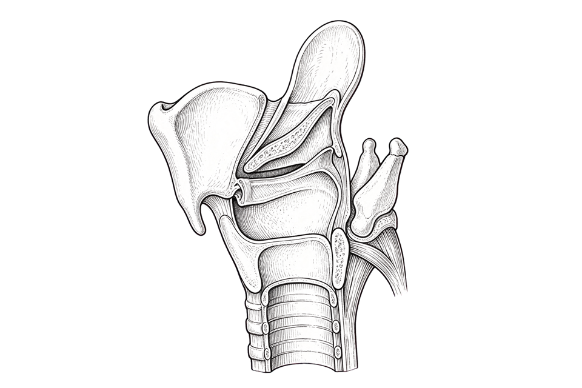

首页 / 学习实验室 / 发声机制
VOICE SCIENCE · INTERACTIVE HUMAN ANATOMY
古典歌手 · 发声器官解剖

Human vocal anatomy for singers
05可切换的真实三维模型10可查阅的结构索引
声带振动并非两片肌肉主动拍打空气。气流、声门下压力与组织弹性共同参与发声。本页以真实标本和可追溯三维模型，帮助你观察发声器官的形态与空间关系。
使用真实人体标本与大学医学解剖教学模型；未核实的结构信息不会用推测补齐。
头颈部真实解剖 · 可旋转三维观察ANATOMICAL REFERENCE
真实人体正中矢状面塑化标本。可旋转、缩放，观察鼻腔、口腔、舌、咽、喉与颈椎之间的空间关系。该模型是标本数字化，不是示意性手绘。
模型：UBC Medicine · Educational Media
查看原始模型与来源
ANATOMY & PHYSIOLOGY · REFERENCE NOTES
喉头与声带
Larynx & Vocal folds
喉由软骨骨架、关节、韧带、内在肌与黏膜构成。真正声带位于声门区；上方的前庭襞（假声带）不是发声时主要振动的声带。
在歌唱中的作用
声带内收、张力与厚度等状态由喉内肌协同调节；呼气气流、声门下压力与声带组织的黏弹性共同参与自激振动。
解剖观察重点
- 甲状软骨、环状软骨与杓状软骨
- 声带与上方前庭襞的层次区别
- 喉室、声门及声门下腔
呼吸与发声 · 生理状态说明
切换静息、吸气、呼气与歌唱状态，查看呼吸肌群、胸廓、肺弹性回缩与声门之间的生理关系。本模块不对器官形状做虚构的拉伸动画。
静息状态：横膈膜呈穹隆状，肺部保持基础充气状态。歌唱呼吸会在此基础上形成更有控制的吸气与呼气协调。
解剖学说明：本页优先采用真实人体塑化标本与可追溯来源的三维解剖模型，不再用自绘轮廓代替真实器官形态。三维模型用于观察空间关系；生理变化的说明另以文字和机制图呈现，不把组织形变简化成随意拉伸。呼吸状态演示仍为方向性教学说明，不是个体生理测量。
解剖学依据与模型来源
结构命名与生理说明以解剖学教材及医学文献为依据；三维模型均由原平台播放器加载，未下载或改造第三方模型文件。

01医学文献解剖结构与生理依据
02大学教学资源真实标本与教学模型
03原始模型页面署名与许可可追溯
- NCBI Bookshelf · Anatomy of the Larynx：喉软骨、喉腔分区、声带与前庭襞。
- NCBI Bookshelf · Laryngeal Muscles：喉内肌及声带内收、外展与张力调节。
- University of Minnesota · Lions Voice Clinic: Anatomy：喉软骨、喉内肌、声带组织分层及发声相关说明。
- University of Dundee · Pharynx and Floor of Mouth teaching models：咽部与口底肌肉的医学教学模型项目。
- NCBI Bookshelf · Larynx Cartilage：喉软骨骨架及杓状软骨结构。
- Cunningham / Encyclopædia Britannica 1911 · 正中矢状面解剖图：公有领域历史解剖图，可作为二维结构对照。
模型署名与许可：UBC Medicine（Sketchfab 原始页面）；University of Dundee / Eve Laws（CC BY-SA 4.0）；Vikrama Raghuraman 与 Devden（CC BY）。完整条款以各原始模型页面为准。
查阅医学解剖依据 ↗